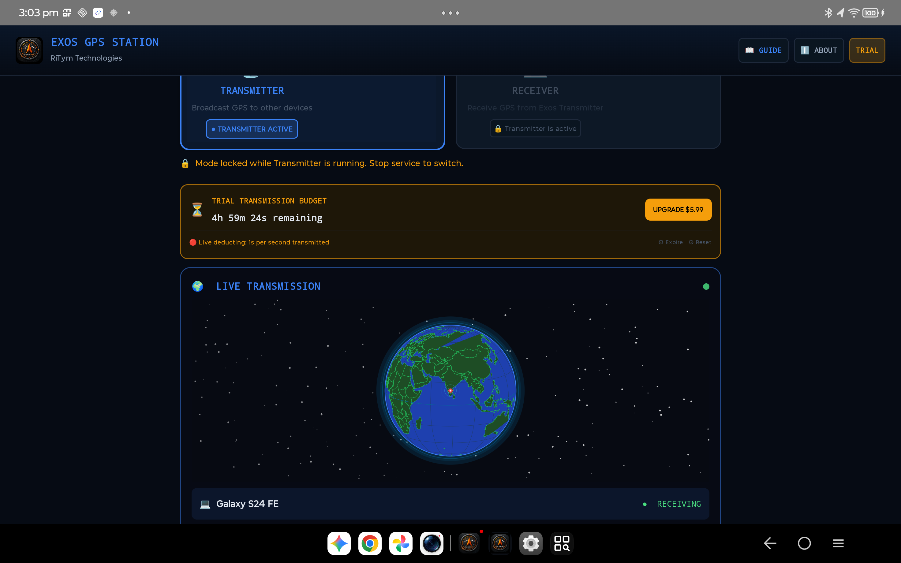
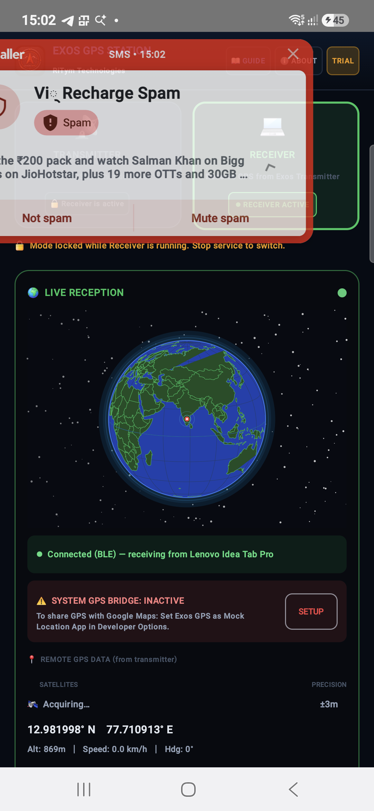

EXOS-GPS STATION USER GUIDE
Transform any standard Android smartphone, tablet, or Windows workstation into an autonomous, off-grid GNSS satellite transceiver. Stream raw NMEA 0183 telemetry over peer-to-peer Bluetooth with zero cloud dependency.
OFFICIAL VIDEO WALKTHROUGH
Watch RightTime Technologies’ animated walkthrough demonstrating 1-tap device selection, live NMEA satellite streaming, and the Smart Guided Mock Location setup for Google Maps.
HOW EXOS-GPS STATION WORKS
Modern smart devices often lack high-sensitivity GPS antennas or waste battery when multiple mapping apps run satellite fixes simultaneously. EXOS-GPS Station solves this with a lightweight, peer-to-peer telemetry bridge:
Taps raw GNSS hardware (GPS, GLONASS, Galileo, BeiDou) on Device A. Formats high-precision NMEA-0183 sentences ($GPGGA, $GPRMC, $GPGSV) and broadcasts them over Bluetooth Serial Port Profile (SPP).
Device B (tablet, companion phone, or navigation HUD) connects via Bluetooth, parses the NMEA telemetry stream, and injects real-time fixes into the Android System Location Manager for all mapping apps.
Operates 100% offline in flight mode. Zero internet, zero external accounts, zero tracking servers. Pure hardware-to-hardware RFCOMM communication in deep wilderness or maritime environments.
TRANSMITTER MODE SETUP
Use your phone or dedicated tablet with strong satellite line-of-sight as the primary GNSS source. It broadcasts continuous positional telemetry to your companion displays.
Select Your Receiver Companion Device
On the main dashboard, tap the prominent "Select Receiver Device" card. A clean paired Bluetooth picker will appear. Select the phone, tablet, or PC you wish to stream telemetry to.
Verify Location Permissions & Satellite Fix
Ensure Location permissions are set to "Allow all the time" or "While using the app". EXOS-GPS Station automatically engages high-accuracy GNSS hardware. You will see active satellite count, accuracy (meters), elevation, and speed.
Tap "Start Transmitting"
The status badge pulses green: "TRANSMITTING // ACTIVE". The app begins generating standard NMEA-0183 sentences and pushes them across the Bluetooth SPP RFCOMM stream. A persistent background notification ensures uninterrupted transmission even with the screen locked.

RECEIVER MODE SETUP
Receiver mode allows a secondary device (like a large cockpit tablet, vehicle dashboard, or off-grid laptop) to ingest external satellite fixes and feed them to any navigation software.
Switch Mode to "Receiver"
At the top of the dashboard, toggle from Transmitter to Receiver.
Select the Transmitter Device
Tap "Select Transmitter Device" and choose your broadcasting phone or GPS puck from your paired Bluetooth devices list.
Tap "Start Receiving"
The app opens an RFCOMM socket, connects to the transmitter, and immediately begins receiving live NMEA sentences with sub-second latency.

SMART GUIDED MOCK LOCATION ASSISTANT
Want Google Maps, ATAK-CIV, OsmAnd, or EXOS Wayfinder to navigate using the external GPS coordinates? Android requires granting Mock Location authority to protect system integrity. EXOS-GPS Station features an intuitive 3-step assistant:
3-STEP ACTIVATION PROCESS
Enable Developer Options
Go to Android Settings ➔ About Phone. Find Build Number and tap it 7 times until you see the notification: "You are now a developer!".
Select Mock Location App
In EXOS-GPS Station, tap the "Open Developer Options" button. The app takes you directly to Developer Settings. Scroll down to "Select mock location app" and choose Exos GPS Solutions.
Automatic In-App Verification
Return to EXOS-GPS Station. The assistant automatically checks Android's `AppOpsManager` and displays a green "MOCK LOCATION VERIFIED ✅" status badge.
SUPPORTED NAVIGATION SUITES:
- Google Maps & Navigation: Full turn-by-turn navigation using external GPS fixes.
- ATAK-CIV & WinTAK: High-precision situational awareness and blue-force tracking.
- OsmAnd & Organic Maps: 100% offline contour mapping and topographic trails.
- EXOS Wayfinder: Native tactical HUD, MGRS waypoints, and backtrack trail recording.
WINDOWS CLIENT INTEGRATION
Need GPS telemetry on a Windows laptop in the field? EXOS-GPS Station provides native Python and Windows workstation clients (`gps_station.py` and `gps_receiver.py`) that create virtual serial COM ports.
1. Quick Start Execution:
git clone https://github.com/exosgps/EXOS-GPS-SYSTEM.git
cd EXOS-GPS-SYSTEM/clients/windows-desktop
# Install serial and Bluetooth dependencies
pip install -r requirements.txt
# Launch the Station GUI Console
python gps_station.py
2. Virtual COM Port Routing (QGIS, OpenCPN, WinTAK):
Using com0com (Null-modem emulator) or Windows Bluetooth Serial Port, the Windows client exposes standard NMEA sentences on a virtual COM port (e.g. `COM5` ➔ `COM6` at 115200 baud). Any desktop GIS or marine software connects to `COM6` as if a commercial Trimble or Garmin antenna was plugged in!
$GPRMC,214210.00,A,3403.1320,N,11814.6220,W,0.02,184.2,060926,,,A*7F
$GPGGA,214210.00,3403.1320,N,11814.6220,W,1,09,0.92,142.4,M,-32.8,M,,*5C
$GPGSV,3,1,11,02,42,120,38,06,28,045,41,12,74,290,44,19,15,310,32*78
TECHNICAL SPECIFICATIONS
| Parameter | EXOS-GPS Station (Android) | EXOS Station (Windows) |
|---|---|---|
| Communication Profile | Bluetooth 5.0+ SPP / RFCOMM | RFCOMM / Virtual COM (com0com) |
| NMEA Ingestion | $GPGGA, $GPRMC, $GPGSV, $GPGSA | $GPGGA, $GPRMC, $GPGSV, $GPGSA |
| Mock Location Provider | System GPS Provider (Fused Location) | N/A (Serial Stream to GIS) |
| Refresh Frequency | 1 Hz – 5 Hz Dynamic GNSS Polling | Up to 10 Hz Serial Throughput |
| Supported Platforms | Android 7.0 (API 24) to Android 16 (API 36) | Windows 10, Windows 11 (64-bit) |
| Internet Requirement | ZERO (100% Offline Autonomy) | ZERO (100% Offline Autonomy) |
| Security & Permissions | Foreground Service (Location + Device) | Local User Space (No Admin Required) |
JOIN THE CLOSED BETA ON GOOGLE PLAY
EXOS-GPS Station is currently live in closed beta testing on Google Play across 176 countries. Help us test off-grid companion navigation!